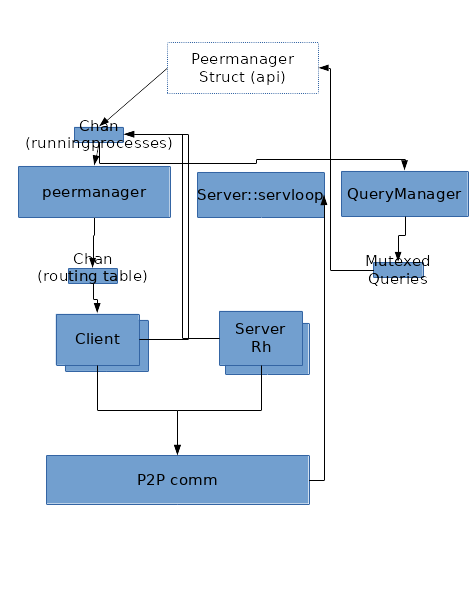

POSTS
Process1
MyDHT Refactoring And Threading (part 1)
Lastly I got some time in my hand (ended my previous job and looking for more low level programming) to refactor some pretty terrible old project of mine.
Even if the refactor is far from complete, the design and its primo implementation is.
This post focus on MyDHT redesign,
Previous design
The initial purpose of MyDHT project was to design a library to run a distributed hash table. It evolves to key value peer to peer info exchange with multi-hop request proxying (query proxyied to none connected peers).
Before redesign, it finally was a HashTable only if using a right Routing implementation (eg mydht-btkad (currently broken)).
Final goal was at the time to implement web of trust application upon this technical brick (some testing with broken mydht-wot).
At the time I was less aware of asynch transport and used only standard rust api (blocking transport) : - a transport trait based upon rust tcp synch api, but with some very odd design. The odd design let me run it on udp with dirty tricks (reader containing the udp frame and read thread running from start on every one). I also give some attempt to use mio (asynch transport) but using it under this design had very few advantages and I dropped it when the coroutine crate I used at the time becames deprecated. So we got a read stream and a write stream : we allow unidirectionnal transport with one socket sending to dest peer and one other socket receiving from dest peer, but we also allow using the same socket depending on transport implementation (internally both read and write stream can use the same tcp socket and be spawn at the same time in transport) - a peer abstraction (related to transport listening address obviously) - a keyval abstraction for content to be share (peer being obviously a keyval) - the encoding/decoding of Key Value was using Rust standard serialize abstraction which I switch to serde with my refacto. It allows many type of exchanges (actually test case runs only over json and binary (bincode crate)). - authentication scheme was broken (udp implementation was allowed by it) : with only two messages called ping and pong leading to a potential dos replay attack, new scheme run with ping - pong - pong (three message). - rules were overly complicated and ill designed (it stay true but limited to kvstore service now) - some shadowing mechanism where implemented (refacto was done to use my ‘readwrite-comp’ lib which was totally inspired by this) allowing some forms of encryption over transport. - keyval and peer storage trait with cache trait and query cache trait, quite a mess by looking back, still have to redesign that - Route trait to decide which peers to query, same still need some redesign
The schema bellow gives an idea of the running threads :

Missing from schema are a few single thread like Key/Value storage, or Peer storage (in routing table), honestly I do not quite get this schema anymore, main things of interest are:
Communication between thread used standard Mpsc, with Arc over peer and KeyVal. The senders channel were group in a ‘RunningProcess’ clonable struct : that was pretty flexible and basically every thread could send message to any thread, except the read and write threads as destination. Read thread was driven by transport and write message proxied by peer management thread to write thread.
All thread where implemented as a single static function call (with a lot of parameter and generic type (generic type were grouped in a few single generic traits by using associated trait but it still looks prety bad)).
Quickly opening unconditionnaly so many system thread felt as bad design and I put some dirty ‘ClientMode’ and ‘ServerMode’ enum (and their associated handle) to allow running read and write process in a new thread or in a batch of existing threads or as a local function call in the parent thread.
Client and Server function call became fastly unintelligible, and it requires to change of ‘Transport’ trait by introducing a circumvoluted ‘start’ function using a closure over the server (read) thread called on reception of a new connection.
https://github.com/cheme/mydht/blob/8d2ff89d48ea9ef993524aabed7b666ba91f8160/src/procs/server.rs line 160 to 220 is a good illustration of this point.
New design
Being totaly annoyed by threads everywhere (it is a library and I do not want to make those choice definitive), ClientMode and ServerMode were added. Looking back at it, it is close to unmaintanable and only implemented for Server (read stream) and Client (write stream) process.
This was one of my concerns while getting back at mydht, with a few simple goals : - usage of future lib to simplify the thread model - actual usage of asynch transport - dependencies upgrade : serde usage being the most obvious, new version of openssl (nice change in api but impacting)…
Investigating the ‘future’ crate and tokio ecosystem, I almost go that way but some of my plan at the time did not match (looking back at my final service abstraction it should have match except for a few details), especially the idea that I wanted a more stream oriented transport trait (I want to plug my ‘tunnel’ lib other the transport but by using MyDHT internal peer management).
I also had quite some fun using Mio (epoll for rust lib) directly and really liked the changes made to the api from the last time I tested it, and decide to run bare mio (no abstraction as I thought it would be a quick job) with very basic state and service (ideally service should simplify and replace what was run with ‘ClientHandle’ and ‘ServerHandle’ before).
So started with transport trait redesign, I quickly felt as uneasy as before : I should use an Arc here, this should run in another thread but not in all case… And I use a ‘Service’ thread which was inspired by tokio service design and a suspend/yield mechanism inconsciously inspired by some of the future concept (especially the fact that when experimenting with future I add to unpark future thread at some point keep a thread handle).
The point at first was to stop running those previous procs functions. Next it quickly lead to a service based approach (model has change quite a bit from the start but seems ok now (except the dissiciation of channel and service leading to very verbose things)). At end, it look similar to what remember of erlang OTP.
Service traits
- Service
pub trait Service {
type CommandIn;
type CommandOut;
fn call<S : SpawnerYield>(&mut self, req: Self::CommandIn, async_yield : &mut S) -> Result<Self::CommandOut>;
}
CommandIn and CommadOut are receive from or send into channels.
- Spawner
pub trait Spawner<
S : Service,
D : SpawnSend<<S as Service>::CommandOut>,
R : SpawnRecv<<S as Service>::CommandIn>> {
type Handle : SpawnHandle<S,D,R>;
type Yield : SpawnerYield;
fn spawn (
&mut self,
service : S,
spawn_out : D,
Option<<S as Service>::CommandIn>,
rec : R,
nb_loop : usize // infinite if 0
) -> Result<Self::Handle>;
}
Basically a way to call a service for a certain number of iteration, each iteration being the reception of a command from input channel the service call and the sending of the service result in the output channel.
- Channel
pub trait SpawnChannel<Command> {
type WeakSend : SpawnSend<Command> + Clone;
type Send : SpawnSend<Command> + Clone;
type Recv : SpawnRecv<Command>;
fn new(&mut self) -> Result<(Self::Send,Self::Recv)>;
fn get_weak_send(&Self::Send) -> Option<Self::WeakSend>;
}
with spawn send and spawn receive similar to an mpsc channel (a const boolean indicate if a channel can send but I should remove it).
pub trait SpawnSend<Command> : Sized {
const CAN_SEND : bool;
fn send(&mut self, Command) -> Result<()>;
}
pub trait SpawnRecv<Command> : Sized {
fn recv(&mut self) -> Result<Option<Command>>;
}
- Yield
Yield is the spawn associatied type that is called when getting a new message from the input channel if empty, but can also be directly call from service.
pub trait SpawnerYield {
fn spawn_yield(&mut self) -> YieldReturn;
}
An example of direct call from service is when Read transport stream being asynch return a WouldBlock error : then we suspend.
Suspend can result in two behavior :
- YieldReturn::Return : the state is stored in service and we exit from execution (will be restore later from handle)
YieldReturn::Loop : the Yield and spawn lead to a context switch and Unyield will pursue exection at this point so in this case we only need to redo the command which leads to suspend.
- Handle
Yes it feels bad, I wanted to get rid of those Client and Server Handle and have associated Service Handle now… At least this is reusable and not as specific to a context as before.
pub trait SpawnHandle<Service,Sen,Recv> : SpawnUnyield {
type WeakHandle : SpawnUnyield + Clone;
fn unwrap_state(self) -> Result<(Service,Sen,Recv,Result<()>)>;
fn get_weak_handle(&self) -> Option<Self::WeakHandle>;
}
The handle let us get the service state (when service is finished) to restart service or manage unprocessed command. A weak handle allows sharing a bit of this handle but is not mandatory (use ‘NoHandle’ as associated type and return None if such an implementation is impossible or bad). The handle is also ‘SpawnUnyield’ letting us unyield suspend service and also check if service is still running.
pub trait SpawnUnyield {
fn is_finished(&mut self) -> bool;
fn unyield(&mut self) -> Result<()>;
}
- Synch object
In my previous implementation, having spend sometime doing few haskell, I tend to confuse a reference with an immutable object and force the Sync trait at many place (on peer and keyval at least) by considering those value to be read only (they are and a change in Peer address should be propagated to all process (currently it looks more robust on this point)), but that is kinda wrong.
Switching reference was also needed, with a local spawner (when we spawn without new thread) we do not require KeyVal or Peer to be ‘Send’ and ‘Arc’ default usage was useless : we defines Ref
and SRef traits.
pub trait Ref<T> : SRef + Borrow<T> {
fn new(t : T) -> Self;
}
Those Ref will mainly be Arc (‘ArcRef’) when running other multiple thread and Rc (‘RcRef’) with copy in between thread when running with less threaded configs or small contents (for such ‘CloneRef’ can be use).
Currently it is only applied to the very central Peer object (not KeyVal directly as we do not have a central KeyVal concept but a global service implementation which can run a KeyVal exchange).
pub trait SRef : Sized {
type Send : SToRef<Self>;
fn get_sendable(self) -> Self::Send;
}
pub trait SToRef<T : SRef> : Send + Sized {
fn to_ref(self) -> T;
}
Basically SRef is similar to Into
Consequence on design
This service abstraction makes it even clearer that MyDHT is not a DHT. With previous design we had to create some strange ‘key’ trait for executing some strange ‘store’ action in some strange ‘keyval storage’ (eg old broken mydht-wot web of trust crate) : it was almost obvious that we could replace ‘Key’ by ‘Query’ and ‘KeyVal’ by Reply. Therefore this time we do not use an explicit ‘keyval’ Store but a global service with messages. Code from previous design is ported to the a KVStoreService which when use as GlobalService is almost the same as previous storage of KeyVal. This service implementation is not in an external crates because it is also the default peer storage/exchange implementation.
A simple schema (without Synch transport related trait (may be describe in a future post)) would be :
Every box uses a service with configurable spawner and channels (generally simple input channel and multiplexed output (struct named as ‘service’ + Dest)).
All messages between service can be route by MainLoop service. MainLoop service contains the peer cache and the Mio Loop for asynch event registration (MainLoop command also registered on it) : MainLoop does not actually suspend and in code we can see that its channels are plugged a bit differently due to its central role (can proxy almost any message). This central bottleneck can be greatly relieved by establishing other optional channels (combination of weak handle and weak sender), yet this is the core routing (optional channels if closed due to restarted service or no channel/spawner implementation are removed and default routing through mainloop is used).
So those optional HandleSend (depending on spawn and channel choice) allows communicating directly with others service : currently a few are used : - api from local and global and peerstore - write from read service (corresponding, only when write service is spawn first(the other scenario need to be implemented but it require to change ReadDest content probably by stoping read service and restarting it after)) - write from local : same as read (readdest is cloned into localdest) - global from local
Conclusion
Another possibility for simplier service traits could be to have a single function for unyielding and sending message : put Channel into SpawnUnyield.
Service definition use too much traits and I need a way to run simple use case (I am thinking macro right now), default associated trait does not fit (need to redefine all if changing one) at the time.
Generaly channels implementations require a limit in their buffers, especially for service such as ‘Write’ where the message are consumed after authentication but can be send before. That is not an issue as the trait can already return errors.
Next post (part 2) will describe some configuring of those service.